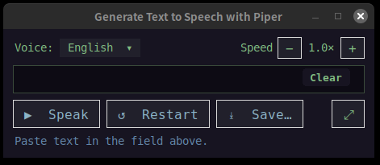

ترجمة تجريبية — النسخة العربية من هذه الصفحة مسودة لم تخضع للمراجعة بعد. وجود خطأ في النص؟ يسعدنا الإبلاغ عنه · Read in English الواجهة العربية تعمل في نافذة FlashBoss الجديدة فقط، لا في إصدار الطرفية.
الأصوات
كيف تبدو الأصوات
ينطق FlashBoss كل بطاقة، وتتيح نافذة PiperTTS المدمجة (تفتح بالضغط على Ctrl + P داخل اللعبة) كتابة أي نص أو لصقه لسماعه منطوقا باللغة المستهدفة. وفي الأسفل أمثلة لكل صوت.
هذان الصوتان يأتيان مع اللعبة نفسها، ويكونان موجودين بمجرد تثبيت FlashBoss.
الإنجليزية الأمريكية
الولايات المتحدة · صوت نسائي
ينطق كل حزم الإنجليزية — Core وPareto 1 و2 وAdvance وAdept ودورات Roots الأربع كلها.
“She has filled the glass bottle with fresh cold water. If you eat a good breakfast, you will feel better all morning.”
بطاقتان من English Core.
LibriTTS · CC BY 4.0
الإسبرانتو (صوت نسائي)
بلا بلد · صوت نسائي
ينطق Toki Pona، المجانية في اللعبة الأساسية، ودورات الإسبرانتو. تم تدريبه خصيصا لـ FlashBoss، إذ لم يكن هناك صوت جيد للإسبرانتو.
“La prezo de tiu libro estas tre malalta, do mi aĉetos ĝin.”
سعر ذلك الكتاب منخفض جدا، لذا سأشتريه.
FlashBoss · CC0 1.0 · مدرب على Mozilla Common Voice
مضمنة في حزمة
شراء الدورة يشمل الصوت
لا شيء إضافي للشراء ولا شيء للضبط. بمجرد تثبيت الحزمة تبدأ بالكلام.
Deutsch
ألمانيا · صوت رجالي
يأتي مع German Core ودورتي German Pareto كلتيهما.
“Ihre Gesundheit ist das Wichtigste im Leben, passen Sie bitte immer gut auf sich auf!”
صحتكم أهم شيء في الحياة — يرجى الاعتناء بأنفسكم جيدا دائما.
Thorsten Müller · CC0 1.0
Español
أمريكا اللاتينية · صوت نسائي
يأتي مع Spanish Core ودورتي Spanish Pareto كلتيهما.
“Logró superar todos los obstáculos gracias a su perseverancia y esfuerzo.”
تمكنت من تجاوز كل العقبات بفضل مثابرتها وجهدها.
es_MX-claude · Piper voices
Français
فرنسا · صوت نسائي
يأتي مع French Core ودورتي French Pareto كلتيهما.
“Il y a des marchés partout dans le pays, et le sel et le poivre sont sur la table.”
في البلد أسواق في كل مكان، والملح والفلفل على الطاولة.
SIWIS · Piper voices
Italiano
إيطاليا · صوت نسائي
يأتي مع Italian Core ودورتي Italian Pareto كلتيهما.
“Ogni mattina faccio colazione con mia madre in cucina.”
كل صباح أتناول الفطور مع أمي في المطبخ.
paola · Piper voices
toki pona
مجانية في اللعبة الأساسية
ينطقها صوت الإسبرانتو — فكل صوت تستخدمه Toki Pona موجود أصلا في الإسبرانتو.
“tenpo kama la, mi wile kama sona e toki pona.”
في المستقبل أريد أن أتعلم Toki Pona.
FlashBoss · CC0 1.0
Latina
كلاسيكية · صوت رجالي
يأتي مع Latin Core وLatin Pareto، وكلتاهما متاحة الآن. تم تدريبه خصيصا لـ FlashBoss بالنطق الكلاسيكي المستعاد، ويراعي علامات المد (macrons) طولا حقيقيا للحركات.
“Prima luce hostium equitatus ad castra accedit.”
عند أول ضوء يقترب فرسان العدو من المعسكر. (عن Caesar)
FlashBoss · CC0 1.0
أصوات DLC تباع منفردة
لكنة مختلفة في كل مكان
يحل صوت DLC محل الصوت المضمن في كل حزم تلك اللغة — البطاقات والدروس ومعارك الزعماء، كل شيء. ويمكن العودة إلى الصوت المدمج في أي وقت دون أن يضيع شيء. وكل بطاقة أدناه تشغل أيضا الصوت الذي تحل محله وهو يقول الجملة نفسها، لسماع ما يتغير بالضبط قبل إنفاق أي شيء.
الإنجليزية البريطانية (صوت نسائي)
جنوب إنجلترا · صوت نسائي
يحل محل الصوت الأمريكي في كل حزم الإنجليزية.
لمن يبدأ مع FlashBoss ويريد الإنجليزية البريطانية: FlashBoss: British English Edition تجمع اللعبة وهذا الصوت معا — وهي الخيار الأنسب للشراء أولا.
“She has filled the glass bottle with fresh cold water. If you eat a good breakfast, you will feel better all morning.”
الاستماع إلى bottle وglass وwater.
الجملة نفسها بالصوت الأمريكي المضمن
British English Female · CC0 1.0
Castellano لم يصدر بعد
إسبانيا · صوت رجالي
يحل محل صوت أمريكا اللاتينية في كل حزم الإسبانية.
“Logró superar todos los obstáculos gracias a su perseverancia y esfuerzo.”
الاستماع إلى gracias وperseverancia.
الجملة نفسها بصوت أمريكا اللاتينية المضمن
davefx · CC0
Русский · Vitali لم يصدر بعد
روسيا · صوت رجالي
يحل محل الصوت النسائي في كل حزم الروسية — Russian Core وPareto 1 وPareto 2.
بعد تثبيته يصبح صوت القراءة للروسية. ويمكن العودة إلى الصوت النسائي في أي وقت: التفضيلات ← الصوت وأصوات النطق.
“Вечером сестра показывает нам фотографии из отпуска.”
في المساء تعرض علينا أختي صور إجازتها.
الجملة نفسها بالصوت النسائي المضمن
Vitali · FlashBoss · CC0 1.0 · مدرب على Mozilla Common Voice
نافذة PiperTTS — قراءة أي شيء

بالضغط على Ctrl + P في أي مكان من اللعبة تفتح نافذة النطق. يمكن لصق كلمة أو جملة أو فقرة من أي نص قيد القراءة — فتنطقه بالصوت المستخدم في التعلم، وتحفظه في ملف عند الرغبة في الاحتفاظ به. وتعمل والبطاقة على الشاشة، وفي القوائم، وفي منتصف معركة زعيم.